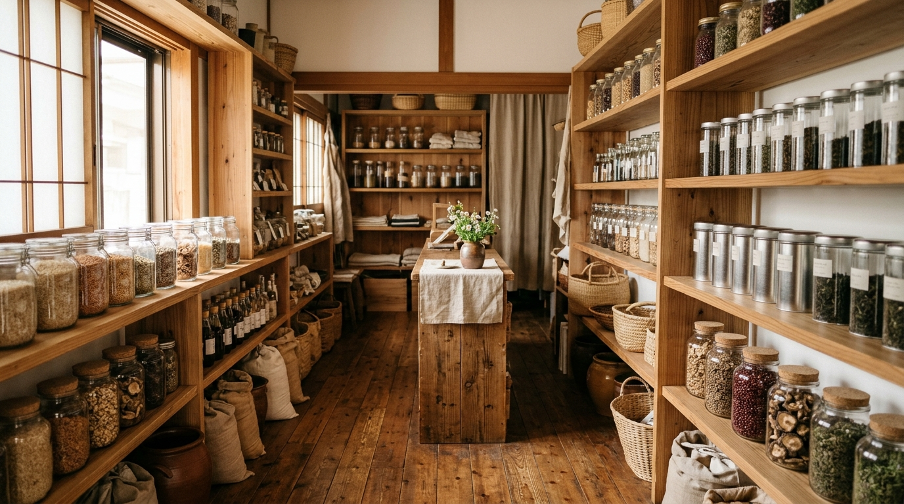
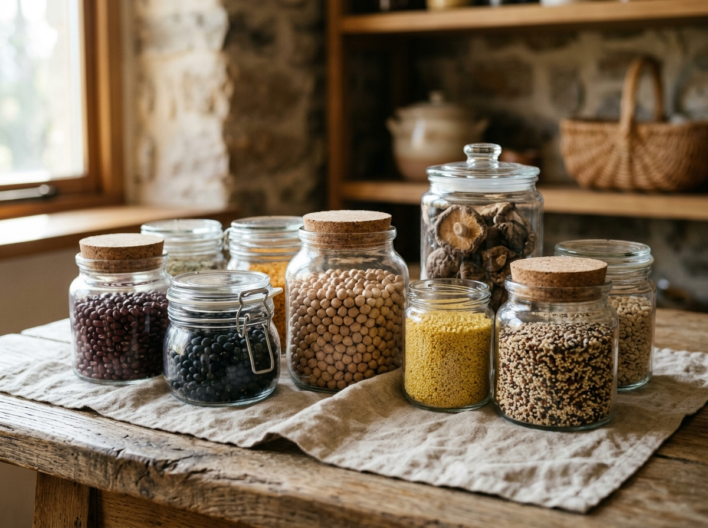
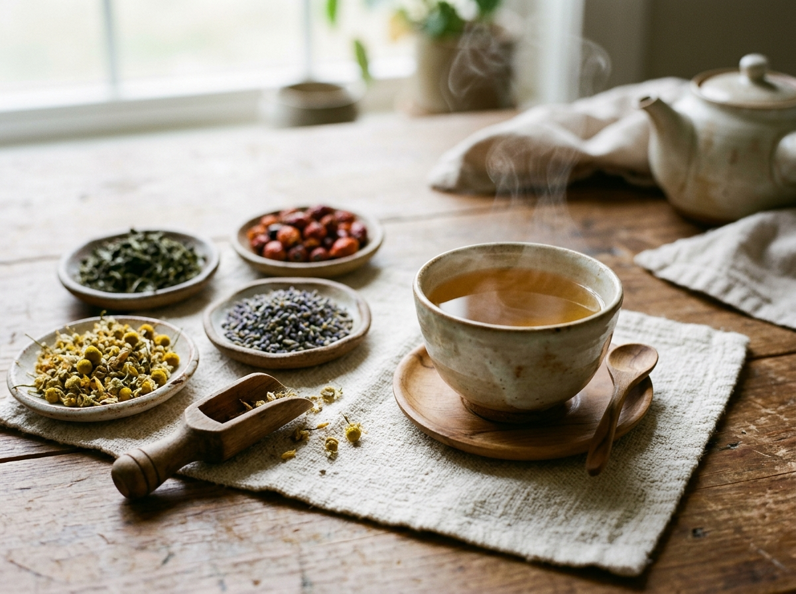
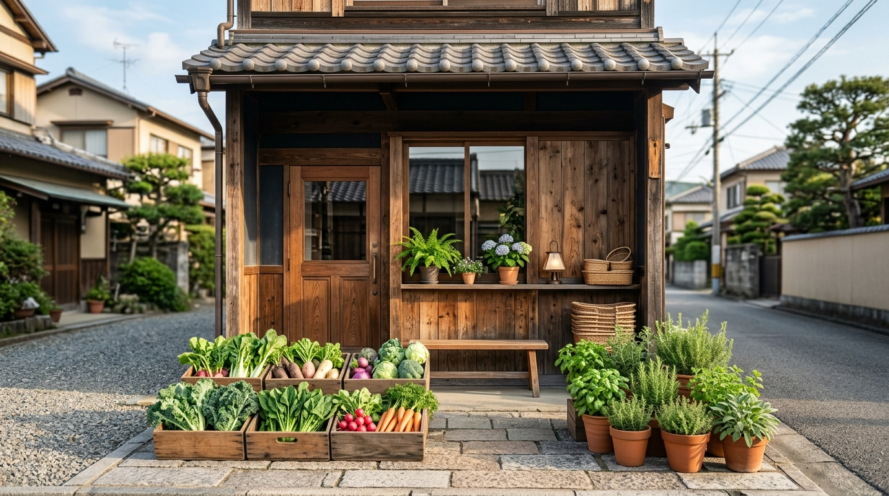

みどりの食卓は、住宅街の角にある20坪ほどの小さなお店です。
畑の顔が見える生産者さんから届く野菜、昔ながらの製法の乾物や調味料、ほっとするハーブティー、肌にやさしい自然派コスメ。毎日の暮らしに取り入れやすいものだけを、ひとつひとつ選んで並べています。
「これ、どうやって食べるの？」「どっちが合うかな？」そんな会話から、お気に入りを一緒に探しましょう。

近隣の契約農家から毎朝届く、旬の有機野菜。数に限りがあります。

保存がきいて、ひと手間で味が決まる。台所の頼れる味方たち。

気分に合わせて選べる、ブレンドと単品。量り売りもできます。
石けん、スキンケア、ボディケア。肌にやさしい成分だけで。
畑や工房を訪ね、つくり手と話して仕入れています。
使い切れる分だけ。ムダなく、気軽に試せます。
レシピや使い方も、店頭でお気軽にご相談ください。
毎朝、野菜を木箱に並べるところから一日が始まります。おいしいものを選ぶ目と、使い方を伝える口には自信があります。はじめての方も、どうぞ気軽にのぞいてください。

| 店名 | みどりの食卓 |
|---|---|
| 住所 | （ここに住所が入ります） |
| 営業時間 | 10:00〜18:00 |
| 定休日 | 水曜日 |
| 電話 | （ここに電話番号が入ります） |
| お支払い | 現金／クレジットカード／各種QR決済 |
※ このページはデモ用に、モルコが自動で作成した見本です。店名・内容は仮のものです。